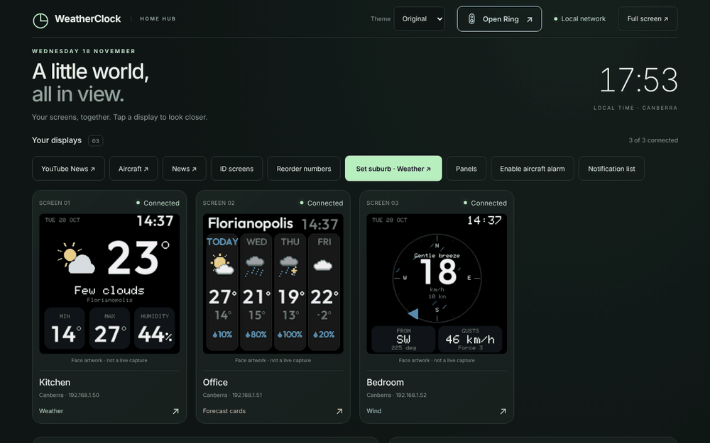
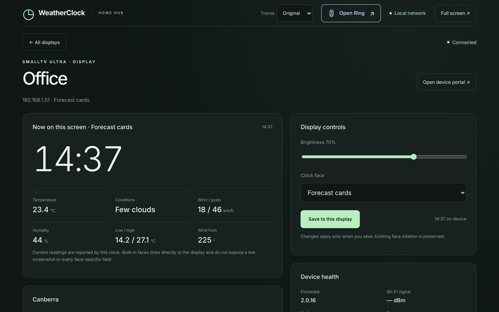
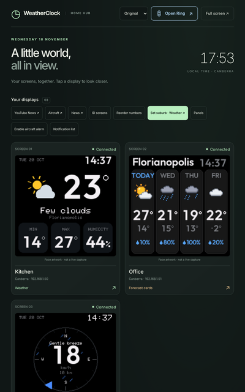

Website files for the Weather Clock firmware (GeekMagic SmallTV-Ultra): the clock's web panel, translations and face gallery.
Source: github.com/FPV-dB/WeatherClock · forked from davicorrea0/smalltv-pomodoro (GPL-3.0).
Weather Clock WWW shows all your clocks on one page. It runs on any always-on computer on your Wi-Fi (Mac, PC or Raspberry Pi, Python only) and you open it in a browser.
Tablets work really well for it. Prop an old Android tablet or iPad up in the kitchen or on a desk, open the dashboard, tap Full screen, and keep it on its charger with the screen set to stay awake. Phones and computer browsers work too.


